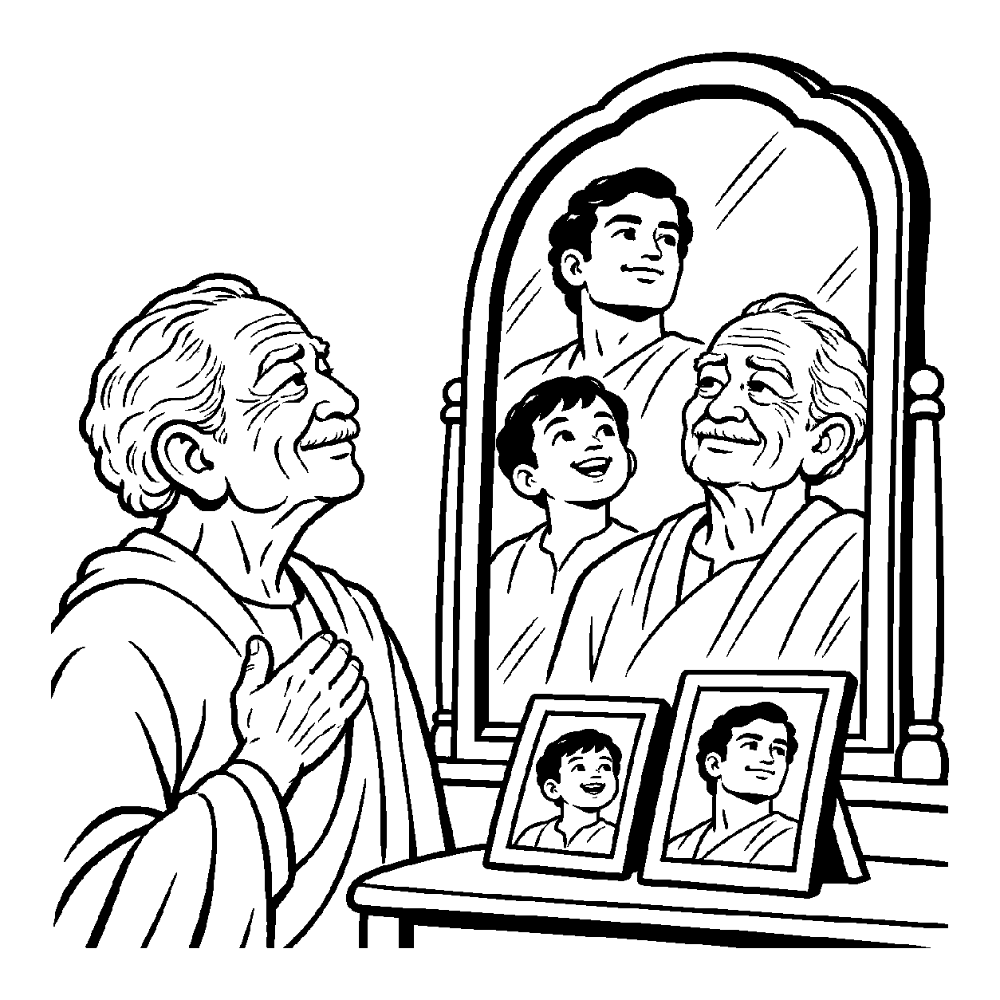

એક માળામાં લાલ, પીળા, નીલા અને શ્વેત એમ સેંકડો મણકાઓ પરોવાયેલા હોય; પ્રત્યેક મણકો બીજાથી સર્વથા જુદો દેખાય છે, પરંતુ તે તમામ મણકાઓની અંદરથી એક જ અદૃશ્ય સૂતરનો તાંતણો આરપાર વણાઈને પસાર થાય છે, જેના આધારે આખી માળા ટકી રહે છે. તેવી જ રીતે અનંત ભૂતકાળ, વર્તમાન અને ભવિષ્યની તમામ બદલાતો પર્યાયો તથા ગુણોમાં જે એક જ મૂળભૂત આત્મદ્રવ્ય અખંડપણે અનુસ્યૂત (અન્વિત) રહે છે, તે ત્રૈકાલિક અન્વયી દ્રવ્યને ગ્રહણ કરવો તે 'અન્વય દ્રવ્યાર્થિકનય' છે.
જૈન ન્યાયમાં 'અન્વય' એટલે સાતત્ય — જે ક્યારેય તૂટતું નથી. આત્મા ક્યારેક નરકમાં ગયો, ક્યારેક તિર્યંચ બન્યો, ક્યારેક મનુષ્ય કે દેવ થયો અને છેવટે સિદ્ધ બનશે. આ તમામ ભવો અને અવસ્થાઓ બદલાતી રહી, પણ એ બધામાં જે એક 'ચૈતન્ય આત્મા' અખંડ દોરાની જેમ વણાયેલો રહ્યો, તે આ અન્વય નયનો વિષય છે.
જો અન્વય દ્રવ્ય ન હોય, તો પૂર્વભવમાં પાપ કોઈ બીજો કરે અને નરકમાં સજા કોઈ ત્રીજો જ ભોગવે! આ નય કર્મ અને તેના ફળ વચ્ચેના શાશ્વત ન્યાયને સાબિત કરે છે.
પર્યાયો સહુ પલટતી, આતમ અન્વય એક;
સૂત્ર મણિ સમ જે રહે, નય અન્વય વિવેક.
તમામ બાહ્ય અને આંતરિક પરિવર્તનો વચ્ચે આત્માના સતત વહેતા અન્વય ચૈતન્ય પ્રવાહને અનુભવવો.

ધર્મનગરના એક વૃદ્ધ વેપારી હરિલાલ પોતાના ઓરડાના દર્પણ સામે ઊભા હતા. તેમના માથાના વાળ સફેદ થઈ ગયા હતા, ચહેરા પર કરચલીઓ પડી હતી, આંખો નબળી પડી ગઈ હતી અને હાથ ધ્રૂજતા હતા. તેમણે ટેબલ પર પડેલી પોતાના બાળપણની અને યુવાનીની સુંદર તસવીરો જોઈ. અચાનક તેમના મનમાં એક ઊંડી મૂંઝવણ અને ગભરાટ જાગ્યો: "આ તસવીરમાં દેખાતો હસતો-રમતો બાળક ક્યાં ગયો? પેલો બળવાન યુવાન ક્યાં ગાયબ થઈ ગયો? શું એ બંને મરી ગયા અને આ કોઈ ત્રીજો જ વૃદ્ધ માણસ ઊભો છે? જો હું ક્ષણે ક્ષણે સાવ બદલાઈ જ જતો હોઉં, તો મારું સાચું અસ્તિત્વ કયું?" આ વિષમ અસ્તિત્વવાદી શંકાથી તેમનું હૃદય કંપી ઊઠ્યું: "આ બદલાતી અવસ્થાઓ પાછળ સાચે જ કોઈ અવિનાશી 'હું' બચ્યો છે ખરો?"
તે જ સમયે તેમના કુટુંબના જ્ઞાની ગુરુવર્ય ત્યાં પધાર્યા. હરિલાલની વ્યથા જાણીને ગુરુજીએ સ્નેહથી કહ્યું, "હરિલાલ, અન્વય દ્રવ્યાર્થિકનયની દ્રષ્ટિથી વિચાર કરો. બાળપણ, યુવાની અને વૃદ્ધાવસ્થા — આ તો દેહની ક્ષણિક પર્યાયો છે જે બદલાતી રહી. પરંતુ બાળપણમાં પણ જે 'હું' હતો, યુવાનીમાં જે સાક્ષી હતો અને આજે આ ઘડપણમાં પણ જે આ તમામ ફેરફારોને જોઈ રહ્યો છે, તે ચેતન આત્મા તો એક ક્ષણ માટે પણ બદલાયો નથી! જેમ માળાના મણકા બદલાય પણ અંદરનો દોરો એક જ રહે, તેમ તારો આત્મા તમામ અવસ્થાઓમાં અખંડ અન્વયરૂપે બિરાજે છે!" ગુરુજીના આ અન્વય-બોધનું પાન કરતાં જ હરિલાલનો ભય પળવારમાં ઓગળી ગયો. તેમને પોતાના શાશ્વત અવિનાશી અસ્તિત્વનો સાક્ષાત્કાર થયો અને ચહેરા પર પરમ સંતોષ છવાઈ ગયો.
જો આ નય કદાગ્રહ બને, તો મનુષ્ય પર્યાયોના ફેરફાર અને વિકાસને સાવ મિથ્યા માનીને સાધના અને ગુણસ્થાનકના ઉત્ક્રાંતિ-ક્રમનો જ ઈનકાર કરી બેસે છે. એક જ પાસાને પકડી રાખવાથી વસ્તુની સમગ્ર અનેકાંતમય સત્તા વિખંડિત થાય છે અને સાધક પોતાના જ એકાંગી આગ્રહના બંધનમાં ફસાઈને સાચી શાંતિ ગુમાવી બેસે છે.
આ જ નય જ્યારે સમન્વયશીલ બને છે, ત્યારે તે સાધકને સંસારના ક્ષણિક સુખ-દુઃખમાં અડગ રાખીને પોતાના શાશ્વત અન્વયી આત્મતત્વમાં સ્થિર થવાનું પરમ બળ આપે છે.